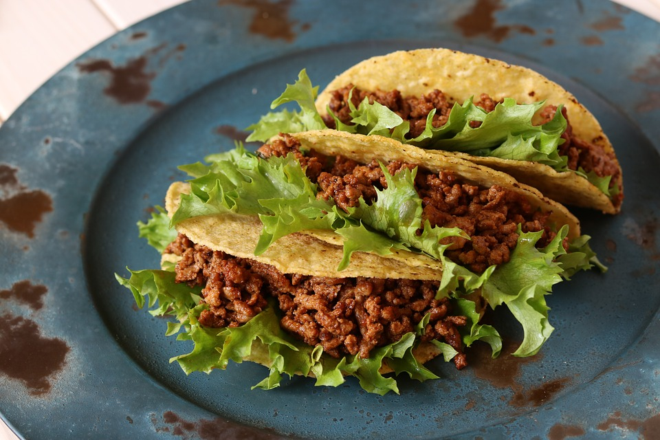

- Tacos de carne;
- Tacos mexicanos;
- Tacos do chef;
Tacos de carne

Tacos mexicanos

Tacos do chef

Taco é uma comida típica do México. Por causa da proximidade com os Estados Unidos, há diferenças entre as receitas dos dois países. O taco estadunidense é diferente do taco mexicano original. Frequentemente, o taco estadunidense é frito em imersão de modo que a massa fique moldada para receber o recheio. A maioria dos supermercados da Califórnia vendem tortillas grandes de milho para esta finalidade. Entretanto, com o influxo do século XXI de imigrantes mexicanos aos Estados Unidos, estes tacos são encontrados fora do sudoeste dos Estados Unidos.
Taco Mexicano Wikipédia